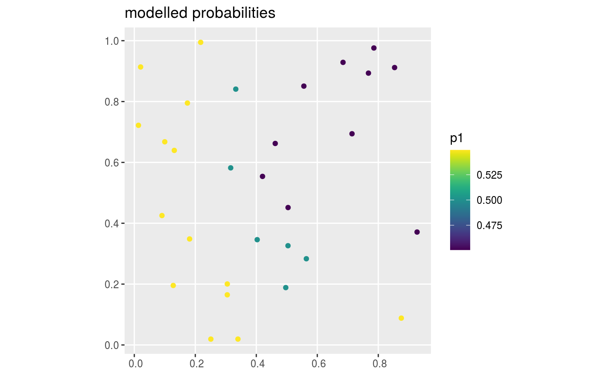
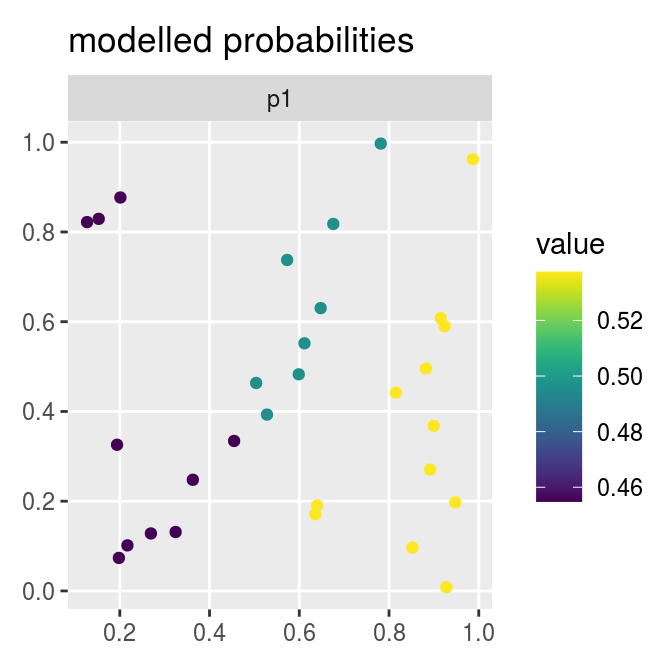
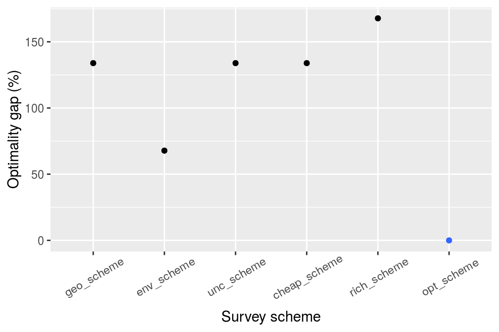

Introduction
The resources available for conservation are limited. To ensure that conservation resources are allocated cost-effectively, conservation plans (termed prioritizations) can be developed – using a combination of economic, biodiversity, and land-use data – to prioritize a set of sites for conservation management (e.g. protected area establishment). However, existing data on biodiversity patterns is incomplete. As a consequence, spatial prioritizations can potentially be improved by collecting additional data (e.g. surveying sites to refine estimates of which species are present inside them). However, this is complicated by the fact that surveying sites consumes limited resources that also need to be used for conservation management. Thus decision makers need to strategically prioritize sites for surveys that will substantially improve spatial prioritisations—this is not a trivial task.
The surveyvoi package is decision support tool for prioritizing sites for surveys based on their potential to improve spatial prioritizations for managing biodiversity. Given a set of sites that could potentially be acquired for conservation management – wherein some sites have previously been surveyed and other sites have not – this package aims to identify which sites should be surveyed because doing so could lead to vastly superior conservation management plans (i.e. the management decision). Methods are provided to calculate the expected value of the decision given current information (evdci function), and the expected value of the decision given a survey scheme (evdsi function). Furthermore, by examining survey schemes, optimal survey schemes can be identified (optimal_survey_scheme function). This package requires the Gurobi software suite. In this vignette, we will use a simulated dataset to explore these methods.
Setup
Let’s start by setting up our R session. Here we will load some R packages and pre-set the random number generators for reproducibility.
Simulate data
Let’s simulate some data. To keep things simple, we will simulate data for 30 sites and one conservation feature (e.g. species). Of the 30 sites in total, we will simulate survey data for 20 sites—meaning that 10 of the sites will not have survey data. We will also simulate two spatially auto-correlated variables to characterise the environmental conditions within the sites. Although the simulation code (i.e. simulate_site_data) can output the probability that features are expected to inhabit the sites, we will disable this option to make our simulation study more realistic and instead predict these probabilities using statistical models.
# simulate site data
site_data <- simulate_site_data(
n_sites = 30, n_features = 1, proportion_of_sites_missing_data = 10 / 30,
n_env_vars = 2, output_probabilities = FALSE)## ..# print site data
print(site_data)## Simple feature collection with 30 features and 5 fields
## geometry type: POINT
## dimension: XY
## bbox: xmin: 0.01366063 ymin: 0.01929364 xmax: 0.9272025 ymax: 0.9946761
## CRS: NA
## # A tibble: 30 x 6
## survey_cost management_cost e1 e2 f1
## <dbl> <dbl> <dbl> <dbl> <dbl>
## 1 7.07047 69.9782 0.539321 -0.895568 1
## 2 5.43637 69.0084 -0.862086 0.135739 NA
## 3 7.02416 66.8320 0.557181 -0.974966 1
## 4 7.11699 68.7759 -0.00550767 -1.14857 1
## 5 6.13178 64.6530 0.590071 -0.841855 NA
## 6 4.31864 67.0997 1.44469 1.86069 0
## 7 5.46042 63.6544 0.786510 -0.619393 0
## 8 8.88090 69.5445 -0.794324 -1.09249 1
## 9 6.39256 72.6893 -1.00987 -0.651723 1
## 10 7.20251 72.0285 -1.14882 -0.707694 1
## # … with 20 more rows, and 1 more variable: geometry <POINT>
The site_data object is a spatially explicit dataset (i.e. sf object) that contains information on the site locations and additional information for each site too. Here, each row corresponds to a different site and each column contains different information about the sites. The f1 column contains the results from previous surveys, where ones indicate that the feature was previously detected at a site, zeros indicate that the feature has not previously been detected at a site, and missing (NA) values mean that a site has not yet been surveyed. The survey_cost column contains the cost for surveying each site, and the management_cost column contains the cost for managing each site for conservation. The e1 and e2 columns contain environmental conditions (e.g. temperature, precipitation). To help understand the simulated data, let’s create some visualizations.
# plot site occupancy data from previous surveys
site_data %>%
mutate(f1 = as.character(f1)) %>%
ggplot() +
geom_sf(aes(color = f1)) +
scale_color_manual(values = c("1" = "red", "0" = "black"),
na.value = "blue") +
labs(title = "presence/absence data")
# plot site cost data
# note that survey and management costs are on different scales
p1 <- ggplot(site_data) +
geom_sf(aes(color = survey_cost)) +
scale_color_viridis() +
labs(title = "survey cost") +
theme(legend.title = element_blank())
p2 <- ggplot(site_data) +
geom_sf(aes(color = management_cost)) +
scale_color_viridis() +
labs(title = "management cost") +
theme(legend.title = element_blank())
grid.arrange(p1, p2, nrow = 1)
# plot site environmental data
site_data %>%
select(starts_with("e")) %>%
gather(var, value, -geometry) %>%
ggplot() +
geom_sf(aes(color = value)) +
facet_wrap(~ var) +
scale_color_viridis() +
labs(title = "environmental conditions")
After simulating data for the sites, we will simulate data for the conservation feature.
# simulate feature data
feature_data <- simulate_feature_data(
n_features = 1, proportion_of_survey_features = 1)
# print feature data
print(feature_data)## # A tibble: 1 x 9
## name survey survey_sensitiv… survey_specific… model_sensitivi…
## <chr> <lgl> <dbl> <dbl> <dbl>
## 1 f1 TRUE 0.952171 0.815544 0.731463
## # … with 4 more variables: model_specificity <dbl>, preweight <dbl>,
## # postweight <dbl>, target <dbl>The feature_data object is a table (i.e. tibble object) that contains information on the conservation feature. Here, each row corresponds to a different feature – and so it only has one row because we only have one feature – and each column contains different information about the feature(s). The name column contains the name of the feature. The survey column indicates if the feature will be examined in future surveys. The preweight, postweight, and target columns contain values that specify the conservation value (or utility) accrued when a set of sites when sites are managed for conservation (e.g. sites are prioritised for protected area establishment; we will explore this further below). Finally, the sensitivity and specificity columns denote the sensitivity (probability of correctly detecting a presence) and specificity (probability of correctly detecting an absence) of the survey methodology.
Modelling probability of occupancy
After simulating the data, we need to estimate the probability of the feature occurring in the unsurveyed sites. This is important for calculating the return on investment of surveying sites, because if we can reliably predict the probability of the feature(s) occurring in unsurveyed sites using models then we may not need to survey them. Specifically, we will fit gradient boosted regression trees – via the xgboost R package – using functions contained in this package. These models are well-suited for modelling species distributions because they can accommodate high order interactions among different predictor variables that are needed to effectively model species’ environmental niches. Since gradient boosted regression trees have many tuning parameters that influence their performance, we will also supply parameters to perform a preliminary calibration procedure using k-fold cross-validation.
# create list of candidate parameter value for calibration procedure
candidate_xgb_parameters <- list(
max_depth = seq(1, 10, 1),
eta = seq(0.1, 0.5, 0.1),
lambda = 10 ^ seq(-1.0, 0.0, 0.25),
subsample = seq(0.5, 1.0, 0.1),
colsample_bytree = seq(0.4, 1.0, 0.1),
objective = "binary:logistic")
# preview candidate parameters
str(candidate_xgb_parameters)## List of 6
## $ max_depth : num [1:10] 1 2 3 4 5 6 7 8 9 10
## $ eta : num [1:5] 0.1 0.2 0.3 0.4 0.5
## $ lambda : num [1:5] 0.1 0.178 0.316 0.562 1
## $ subsample : num [1:6] 0.5 0.6 0.7 0.8 0.9 1
## $ colsample_bytree: num [1:7] 0.4 0.5 0.6 0.7 0.8 0.9 1
## $ objective : chr "binary:logistic"# identify suitable parameters for model fitting
# ideally, we would set n_random_search_iterations much higher (e.g. 10000),
# but we will keep it low to reduce processing time for this example
xgb_results <- fit_occupancy_models(
site_data, "f1", c("e1", "e2"), n_folds = 2,
n_random_search_iterations = 100, parameters = candidate_xgb_parameters)After fitting the models, we can examine the tuning parameters used to fit the models, extract the modelled probability of occupancy, and evaluate the performance of the models.
# print best parameters
xgb_parameters <- xgb_results$parameters
print(xgb_parameters)## [[1]]
## [[1]]$max_depth
## [1] 2
##
## [[1]]$eta
## [1] 0.1
##
## [[1]]$nrounds
## [1] 80
##
## [[1]]$scale_pos_weight
## [1] 0.8333333
##
## [[1]]$lambda
## [1] 0.3162278
##
## [[1]]$subsample
## [1] 0.7
##
## [[1]]$colsample_bytree
## [1] 0.5
##
## [[1]]$objective
## [1] "binary:logistic"# print model performance (AUC value)
# since this value is greater than 0.8, our model is "good enough"
xgb_performance <- xgb_results$performance
print(data.frame(xgb_performance))## feature train_auc_mean train_auc_std train_sensitivity_mean
## 1 f1 0.8870833 0.0465512 0.7166667
## train_sensitivity_std train_specificity_mean train_specificity_std
## 1 0.1649916 0.875 0.1767767
## test_auc_mean test_auc_std test_sensitivity_mean test_sensitivity_std
## 1 0.9695833 0.01355288 0.8333333 0.2357023
## test_specificity_mean test_specificity_std
## 1 0.9 0.1414214# store the model sensitivities and specificities in the feature_data object
feature_data$model_sensitivity <- xgb_performance$test_sensitivity_mean
feature_data$model_specificity <- xgb_performance$test_specificity_mean
# store predicted probabilities values in the site_data object
xgb_predictions <- xgb_results$predictions
print(xgb_predictions)## # A tibble: 30 x 1
## f1
## <dbl>
## 1 0.518793
## 2 0.500435
## 3 0.518793
## 4 0.563083
## 5 0.518793
## 6 0.425734
## 7 0.518793
## 8 0.594216
## 9 0.594216
## 10 0.594216
## # … with 20 more rowssite_data$p1 <- xgb_predictions$f1
# plot site estimated occupancy probabilities
ggplot(site_data) +
geom_sf(aes(color = p1)) +
scale_color_viridis() +
labs(title = "modelled probabilities")
Expected value given current information
After simulating and modelling the data, we will now examine the expected value of the decision given current information. This value represents the conservation value of the optimal spatial prioritization given current information, whilst accounting for uncertainty in the presence (and absence) of the conservation feature in each site. Specifically, “current information” refers to our existing survey data and our occupancy models. Before we can compute the expected value of the decision given current information, we first need to decide how well will measure the value (or utility) of a given management decision.
We will use an equation based on the Zonation decision support tool (Moilanen 2007) to parametrise the conservation value associated with managing a set of sites for conservation. It represents the objective function of the spatial prioritization component of the value of information calculations. To interpret this equation, let \(J\) denote the set of sites (indexed by \(j\)), and \(I\) denote the set of features (indexed by \(i\)). Also let \(X_j\) contain binary (i.e. zero or one) values indicating if each site \(i \in I\) is prioritized for conservation management or not, \(Z_{ij}\) contain binary values indicating the presence or absence of features \(i \in I\) occurring in sites \(j \in J\), \(\alpha_i\) denote the preweight column value(s), \(\gamma_i\) denote the postweight column value(s), and \(\tau_i\) denote the target column value(s). Furthermore, let \(H_i\) denote the total number of occupied sites for features \(i \in I\), and let \(T\) denote the total number of sites \(j \in J\).
\[ H_i = \sum_{j \in J} X_j Z_{ij} \\ T = \sum_{j \in J} 1 \\ B = \sum_{i \in I} \begin{cases} \alpha \times \frac{H_i}{\tau_i}, \text{ if } H_i < \tau_i \\ \alpha + \left( \gamma \times \frac{H_i - \tau_i}{T - \tau_i} \right), \text{ else } \\ \end{cases} \]
Let’s visualize this equation by making a graph. Here, the x-axis shows the number of protected sites that occupied by the feature, and the y-axis shows the conservation value associated with this number.
# plot the value function
plot_conservation_value(
site_data = site_data,
feature_data = feature_data,
site_occupancy_columns = "f1",
feature_preweight_column = "preweight",
feature_postweight_column = "postweight",
feature_target_column = "target")
We can see that conservation value increases with the amount of the conservation feature held in the prioritization (i.e. the line is always increasing). This is important because it means that we will always consider it more beneficial to protect more sites that contain the conservation features. Additionally, we can also see that the line has a bend in it – specified using value(s) in the target column – and so the rate of the conservation value accrued is much slower after crossing a the target threshold. This is useful if we have multiple features, because it tells the conservation prioritization algorithm that once we have conserved “enough” of one feature (specified using the target column) that it can then focus on other features (broadly speaking). Furthermore, the solid line represents the range of conservation values that we could obtain if we protected sites that have observed presences, and the dashed line represents the potential values we could obtain if we also protected unsurveyed sites and those unsurveyed sites contained the feature.
Next, we will set a total budget (i.e. total_budget). This total budget represents the total amount of resources available for surveying sites and managing them for conservation. It will be set as 80% of the total site management costs.
# calculate total budget for surveying and managing sites
total_budget <- sum(site_data$management_cost) * 0.8
# print total budget
print(total_budget)## [1] 1600.412Given the total budget, we can now calculate the expected value of the decision given current information.
# expected value of the decision given current information
evd_current <- evdci(
site_data = site_data,
feature_data = feature_data,
site_occupancy_columns = "f1",
site_probability_columns = "p1",
site_management_cost_column = "management_cost",
feature_survey_sensitivity_column = "survey_sensitivity",
feature_survey_specificity_column = "survey_specificity",
feature_model_sensitivity_column = "model_sensitivity",
feature_model_specificity_column = "model_specificity",
feature_preweight_column = "preweight",
feature_postweight_column = "postweight",
feature_target_column = "target",
total_budget = total_budget)
# print value
print(evd_current)## [1] 176.229We can potentially improve the expected value of the decision given current information by learning more about which sites are more likely (and less likely) to contain the conservation feature.
Survey schemes
Now we will generate some candidate survey schemes to see if we can improve the management decision. To achieve this, we will set a budget for surveying additional sites. Specifically, this survey budget (i.e. survey_budget) will be set as 40% of the survey costs for the unsurveyed sites. Note that our total budget must always be greater than or equal to the survey budget.
# calculate budget for surveying sites
# add column to site_data indicating if the sites already have data or not
site_data$surveyed <- !is.na(site_data$f1)
# add column to site_data containing the additional survey costs,
# i.e. sites that already have data have a zero cost, and
# sites that are missing data retain their cost values
site_data <-
site_data %>%
mutate(new_survey_cost = if_else(surveyed, 0, survey_cost))
# calculate total cost of surveying remaining unsurveyed sites
total_cost_of_surveying_remaining_sites <-
sum(site_data$new_survey_cost)
# calculate budget for surveying sites
survey_budget <- total_cost_of_surveying_remaining_sites * 0.4
# print budgets
print(survey_budget)## [1] 21.15986print(total_budget)## [1] 1600.412We will generate survey schemes by selecting unsurveyed sites that (i) increase geographic coverage among surveyed sites, (ii) increase coverage of environmental conditions among surveyed sites (i.e. environmental diversity; Faith & Walker 1996), (iii) select unsurveyed site with highly uncertain modelled predictions (i.e. modelled probabilities close to 0.5), (iv) increase coverage of sites that have low management costs, and (v) increase coverage of sites with high modelled probabilities of occupancy (i.e. predicted site richness).
# (i) generate survey scheme to increase geographic coverage
geo_scheme <- geo_cov_survey_scheme(site_data, "new_survey_cost", survey_budget,
locked_out = "surveyed")
# (ii) generate survey scheme to increase environmental diversity,
# environmental distances are calculated using Euclidean distances here,
# though we might consider something like Mahalanobis distances for a
# real dataset to account for correlations among environmental variables)
env_scheme <- env_div_survey_scheme(site_data, "new_survey_cost", survey_budget,
c("e1", "e2"), locked_out = "surveyed",
method = "euclidean")
# (iii) generate survey scheme using site uncertainty scores
# calculate site uncertainty scores
site_data$uncertainty_score <- relative_site_uncertainty_scores(site_data, "p1")
# generate survey scheme
unc_scheme <- weighted_survey_scheme(site_data, "new_survey_cost",
survey_budget, "uncertainty_score",
locked_out = "surveyed")
# (iv) generate survey scheme using site management cheapness
# (i.e. inverse management cost)
site_data$inv_management_cost <- 1 / site_data$management_cost
cheap_scheme <- weighted_survey_scheme(site_data, "new_survey_cost",
survey_budget, "inv_management_cost",
locked_out = "surveyed")
# (v) generate survey scheme using site richness scores
# calculate site richness scores
site_data$richness_score <- relative_site_richness_scores(site_data, "p1")
# generate survey scheme
rich_scheme <- weighted_survey_scheme(site_data, "new_survey_cost",
survey_budget, "richness_score",
locked_out = "surveyed")Let’s visualize the different survey schemes.
# add schemes to site_data
site_data$geo_scheme <- c(geo_scheme)
site_data$env_scheme <- c(env_scheme)
site_data$unc_scheme <- c(unc_scheme)
site_data$cheap_scheme <- c(cheap_scheme)
site_data$rich_scheme <- c(rich_scheme)
# plot the schemes
site_data %>%
select(contains("scheme")) %>%
gather(name, value, -geometry) %>%
mutate_if(is.logical, as.character) %>%
mutate(name = factor(name, levels = unique(name))) %>%
ggplot() +
geom_sf(aes(color = value)) +
facet_wrap(~ name, nrow = 2) +
scale_color_manual(values = c("TRUE" = "red", "FALSE" = "black"))
We can see that different approaches yield different survey schemes – but which survey scheme is the best?
Expected value of the decision given the candidate survey schemes
Now that we’ve generated the survey schemes, let’s calculate the expected value of the decision of each survey scheme.
# create table to store results
evd_survey_schemes <-
tibble(name = c("geo_scheme", "env_scheme", "unc_scheme", "cheap_scheme",
"rich_scheme"))
# expected value of the decision given each survey scheme
evd_survey_schemes$value <- sapply(
evd_survey_schemes$name, function(x) {
evdsi(
site_data = site_data,
feature_data = feature_data,
site_occupancy_columns = "f1",
site_probability_columns = "p1",
site_env_vars_columns = c("e1", "e2"),
site_survey_scheme_column = as.character(x),
site_management_cost_column = "management_cost",
site_survey_cost_column = "survey_cost",
feature_survey_column = "survey",
feature_survey_sensitivity_column = "survey_sensitivity",
feature_survey_specificity_column = "survey_specificity",
feature_model_sensitivity_column = "model_sensitivity",
feature_model_specificity_column = "model_specificity",
feature_preweight_column = "preweight",
feature_postweight_column = "postweight",
feature_target_column = "target",
total_budget = total_budget,
xgb_parameters = xgb_parameters,
xgb_n_folds = 2)
})
# print values
print(evd_survey_schemes)## # A tibble: 5 x 2
## name value
## <chr> <dbl>
## 1 geo_scheme 176.087
## 2 env_scheme 176.447
## 3 unc_scheme 176.087
## 4 cheap_scheme 176.087
## 5 rich_scheme 176.192We can also calculate how much the information gained from each of the survey schemes is expected to improve the management decision. This quantity is called the return on investment for each survey scheme.
# estimate the return on investment for each survey scheme
evd_survey_schemes$roi <-
evd_survey_schemes$value - evd_current
# print values
print(evd_survey_schemes)## # A tibble: 5 x 3
## name value roi
## <chr> <dbl> <dbl>
## 1 geo_scheme 176.087 -0.141894
## 2 env_scheme 176.447 0.217914
## 3 unc_scheme 176.087 -0.141894
## 4 cheap_scheme 176.087 -0.141894
## 5 rich_scheme 176.192 -0.0366875# visualize the return on investment for each survey scheme
# color the best survey scheme in blue
evd_survey_schemes %>%
mutate(name = factor(name, levels = name),
is_best = roi == max(roi)) %>%
ggplot(aes(x = name, y = roi)) +
geom_col(aes(fill = is_best, color = is_best)) +
xlab("Survey scheme") +
ylab("Return on investment") +
scale_color_manual(values = c("TRUE" = "#3366FF", "FALSE" = "black")) +
scale_fill_manual(values = c("TRUE" = "#3366FF", "FALSE" = "black")) +
theme(axis.text.x = element_text(angle = 30, vjust = 0.65),
legend.position = "none")
In this particular simulation, we can see that conducting additional surveys can improve our ability to decide which sites we should manage for conservation. This is evidenced by the fact that some of the survey schemes (i.e. env_scheme) have positive return on investment values—meaning that the expected value of the management decision is greater when we conduct these surveys (even when accounting for survey costs). We can also see that surveying additional sites may not necessarily improve our conservation decisions, since some of the survey schemes (e.g. rich_scheme) have negative values. But what is the best possible – the optimal – survey scheme?
Optimal survey scheme
Now let’s identify the optimal survey scheme by directly maximizing the expected value of the decision given a survey scheme.
# generate optimal survey scheme(s)
opt_scheme <- optimal_survey_scheme(
site_data = site_data,
feature_data = feature_data,
site_occupancy_columns = "f1",
site_probability_columns = "p1",
site_env_vars_columns = c("e1", "e2"),
site_management_cost_column = "management_cost",
site_survey_cost_column = "survey_cost",
feature_survey_column = "survey",
feature_survey_sensitivity_column = "survey_sensitivity",
feature_survey_specificity_column = "survey_specificity",
feature_model_sensitivity_column = "model_sensitivity",
feature_model_specificity_column = "model_specificity",
feature_preweight_column = "preweight",
feature_postweight_column = "postweight",
feature_target_column = "target",
total_budget = total_budget,
survey_budget = survey_budget,
xgb_parameters = xgb_parameters,
xgb_n_folds = 2)## [1] 1# add optimal scheme to site data
site_data$opt_scheme <- c(opt_scheme[1, ])
# plot optimal scheme and the environmental diversity scheme
site_data %>%
select(opt_scheme, env_scheme) %>%
gather(name, value, -geometry) %>%
mutate_if(is.logical, as.character) %>%
mutate(name = factor(name, levels = unique(name))) %>%
ggplot() +
geom_sf(aes(color = value)) +
facet_wrap(~ name, nrow = 1) +
scale_color_manual(values = c("TRUE" = "red", "FALSE" = "black"))
We can see that the optimal survey scheme (opt_scheme) is different to the scheme based on surveying sites to increase the environmental diversity of surveyed sites (env_scheme). Interestingly, the optimal scheme selects fewer sites than the other survey schemes. This result shows that survey strategies need to ensure adequate funds remain for actually achieving conservation objectives.
# calculate return on investment of the optimal scheme
evd_opt <- evdsi(
site_data = site_data,
feature_data = feature_data,
site_occupancy_columns = "f1",
site_probability_columns = "p1",
site_env_vars_columns = c("e1", "e2"),
site_survey_scheme_column = "opt_scheme",
site_management_cost_column = "management_cost",
site_survey_cost_column = "survey_cost",
feature_survey_column = "survey",
feature_survey_sensitivity_column = "survey_sensitivity",
feature_survey_specificity_column = "survey_specificity",
feature_model_sensitivity_column = "model_sensitivity",
feature_model_specificity_column = "model_specificity",
feature_preweight_column = "preweight",
feature_postweight_column = "postweight",
feature_target_column = "target",
total_budget = total_budget,
xgb_parameters = xgb_parameters,
xgb_n_folds = 2)
# calculate value
print(evd_opt)## [1] 176.8669# append optimal results to results table
evd_survey_schemes <- rbind(
evd_survey_schemes,
tibble(name = "opt_scheme", value = evd_opt, roi = evd_opt - evd_current))
# print updated results table
print(evd_survey_schemes)## # A tibble: 6 x 3
## name value roi
## <chr> <dbl> <dbl>
## 1 geo_scheme 176.087 -0.141894
## 2 env_scheme 176.447 0.217914
## 3 unc_scheme 176.087 -0.141894
## 4 cheap_scheme 176.087 -0.141894
## 5 rich_scheme 176.192 -0.0366875
## 6 opt_scheme 176.867 0.637912# visualize return on investment values
# color the best survey scheme in blue
evd_survey_schemes %>%
mutate(name = factor(name, levels = name),
is_best = roi == max(roi)) %>%
ggplot(aes(x = name, y = roi)) +
geom_col(aes(fill = is_best, color = is_best)) +
xlab("Survey scheme") +
ylab("Return on investment") +
scale_color_manual(values = c("TRUE" = "#3366FF", "FALSE" = "black")) +
scale_fill_manual(values = c("TRUE" = "#3366FF", "FALSE" = "black")) +
theme(axis.text.x = element_text(angle = 30, vjust = 0.65),
legend.position = "none")
We can see that the optimal survey scheme has the highest return on investment of all the candidate survey schemes. To understand how sub-optimal the candidate survey schemes actually are, let’s compute their relative optimality and visualize them.
# express values in terms of optimality
evd_survey_schemes$optimality <-
((max(evd_survey_schemes$roi) - evd_survey_schemes$roi) /
max(evd_survey_schemes$roi)) * 100
# visualize relative optimality
# zero = optimal, and increasing values indicate greater sub-optimality
evd_survey_schemes %>%
mutate(name = factor(name, levels = name),
optimality = abs(optimality),
is_best = optimality == min(optimality)) %>%
ggplot(aes(x = name, y = optimality)) +
geom_point(aes(fill = is_best, color = is_best)) +
xlab("Survey scheme") +
ylab("Optimality gap (%)") +
scale_color_manual(values = c("TRUE" = "#3366FF", "FALSE" = "black")) +
scale_fill_manual(values = c("TRUE" = "#3366FF", "FALSE" = "black")) +
theme(axis.text.x = element_text(angle = 30, vjust = 0.65),
legend.position = "none")
We can see that the optimal survey scheme performs much better than all the other survey schemes. This result shows that value of information analyses can potentially improve management decisions by strategically allocating funds to surveys and conservation management.
References
Faith, D.P. & Walker, P. (1996). Environmental diversity: On the best-possible use of surrogate data for assessing the relative biodiversity of sets of areas. Biodiversity & Conservation, 5, 399–415.
Moilanen, A. (2007). Landscape zonation, benefit functions and target-based planning: Unifying reserve selection strategies. Biological Conservation, 134, 571–579.